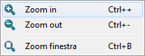

Cette documentation n'est pas terminée. SVP contribuez en traduisant la documentation.
Allez voir Draft ShapeString pour un modèle de documentation. Gui Command donne un aperçu des commandes. Et, pour voir d'autres commandes Liste des Commandes.
Allez sur Help FreeCAD ou comment faire pour contribuer.
|
| Emplacement du menu |
|---|
| Affichage → Zoom → option |
| Ateliers |
| Tous |
| Raccourci par défaut |
| Voir aussi |
Description
Vous permet d'adapter la vue. Offre la possibilité d'agrandir, réduire ou ajuster la vue à une région sélectionnée avec la souris.
Le menu Outil Zoom: 
{kind=link}
Utilisation
- Dans Affichage → Zoom → cliquer sur la fonction souhaitée. La vue est mise à l'échelle en fonction de du niveau de zoom défini.
- Répétez l'action sur
 Zoom avant ou
Zoom avant ou
 Zoom arrièrejusqu'à obtenir la mise à l'échelle souhaitée.
Zoom arrièrejusqu'à obtenir la mise à l'échelle souhaitée.
La Fonction Zoom est réglable Modifier → Préférences → Affichage → Vue 3D. Sur la même page, en cochant la case 'Inverser Zoom' , vous pouvez changer l'effet produit par la rotation de la molette de la souris (vous pouvez, par exemple, décider de d'inverser le sens de zoom par rapport à la rotation de la molette).
Aussi avec l'option 'Zoom curseur' vous pouvez utiliser le curseur pour définir le centre de la mise à l'échelle.
Utilisation du clavier
- Utilisez les commandes rapide: Ctrl ++ pour agrandir, Ctrl - - pour réduire et Ctrl + B pour sélectionner une zone.
Utilisation de la souris
Voir le Types de la souris pour choisir le style de navigation et voir Définir les préférences pour le modifier.
Utilisation de la souris en sélectionnant une partie
- Menu Démarrer Voir → Zoom → en cliquant sur la fonction
 fenêtre.
fenêtre. - Placez la souris dans la zone de travail, appuyez sur le bouton gauche et sélectionnez une zone. Relâchez le bouton.
Exemples:
Agrandissement avec
La zone agrandie
{kind=link}